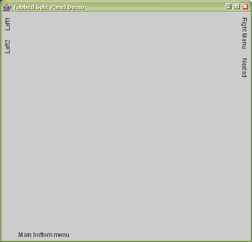
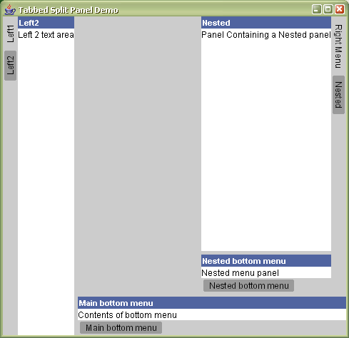

Bhavaya TabbedSplitPanels (org.bhavaya.ui.TabbedSplitPanel) provide a JPanel derivative that can be subdivided (split) into two or more Components when a button is pressed. They can be viewed as providing a pop-up, or drawer feature to a main component. The pop-up component compresses the main component when both are displayed. The TabbedSplitPanel is illustrated below. The figure on the left has non of it's pop-up components activated, there is a blank central JPanel acting as the main component and there are buttons on the left, right and bottom edges of the window. The figure on the right is the result when some of the split panels have been activated. JTextAreas have been used as the pop-up component and the figure also shows how TabbedSplitPanels can be nested within one another.
|  |  |
The TabbedSplitPanel demo was used to generate the above two figures, it can be run directly using JavaWebStart. Alternatively if you have Bhavaya's library files in your classpath you can compile and run the source directly, or if you have downloaded and extracted examples.zip it can be run with: ant tabbedsplitpaneldemo
Constructor summary:
TabbedSplitPanel(Component mainPanel, int orientation)
The mainPanel is the centrally displayed object. Next to this the TabbedSplitPanel creates a gutter. The gutter is where the buttons that activate the split panel will be placed. The position of the gutter relative to the mainPanel is controlled by orientation and can be TabbedSplitPanel.LEFT, TabbedSplitPanel.RIGHT and TabbedSplitPanel.BOTTOM.
The buttons and the component that they activate are added using objects of the MenuPanel class.
MenuPanel constructor summary:
MenuPanel(String name, Component component, boolean autoTitle)
The name is the text for the button created in the gutter, it is also (optionally) the heading used for the pop-up component (if autoTitle is true). component is the Component that is activated and displayed when the MenuPanel is activated.
MenuPanels are added using TabbedSplitPanel.addMenuPanel(menuPanel) and the number of MenuPanels that can be added is not limited by the software.
An example of how to use the TabbedSplitPanel is shown below:
JPanel mainPanel = new JPanel();
TabbedSplitPanel centrePanel = new TabbedSplitPanel(mainPanel,TabbedSplitPanel.RIGHT);
MenuPanel menuPanel = new MenuPanel("Right Menu", new JTextArea("Menu panel for right tabbed split panel"),true);
centrePanel.addMenuPanel(menuPanel);
frame.setContentPane(centrePanel)
where frame is a previously created JFrame.
This will create an empty centre panel, with a button labelled Right menu in a gutter on the right-hand side. When clicked the button brings up a JTextArea, also on the right-hand side.
(When using this component remember to add Bhavaya's jar files to your classpath (extract_location/bhavaya/bin/bhavaya.jar and extract_location/bhavaya/lib/log4j-1.2.15-patched.jar).)